Amazon (AMZN) is a more complex phenomenon than a highly successful marketplace selling its items and enabling third-party vendors to use its platform to sell its products. It is a multinational technology company relying on e-commerce, cloud computing, digital streaming, and artificial intelligence. Amazon enjoys a reputation as the world’s most influential economic and cultural force. It is also a brand that sets the rules and commands respect even among its FANG peers, Meta (formerly Facebook), Netflix, and Alphabet/Google, which have demonstrated massive growth in recent years. Read on to see statistics testifying to Amazon’s impressive development over the years and learn more facts about the company. The numbers in the article below demonstrate why Amazon is rightly considered a rare and unparalleled phenomenon in the e-commerce sector and beyond.
There are probably few people in the world who do not know what Amazon is. Anyone who ever searched for a product to buy online was directed to this retailer. As Amazon constantly grabs the headlines in the news about financial markets or wealthy businesses, even those who do not shop on the internet have still heard about Amazon’s success or Jeff Bezos’s riches. Yet, although Amazon is constantly in the news, there are some less widely circulated facts about the company. They are listed below: Despite starting as a bookseller, Amazon.com is a tech company whose business centers around simplifying online transactions for customers. Amazon owns a wide range of products: Amazon Game Studio, Amazon Drive, a cloud storage application, and Amazon Web Services (AWS), a comprehensive cloud platform, used by many technology representatives worldwide. Amazon owns the One Click trademark, patented in 1999. This patent expired in the United States on September 11, 2017, and has not been renewed yet. Amazon owns over 40 subsidiaries and brands, the most well-known of which are Whole Foods, audio-book seller Audible, book review site GoodReads, and live-streaming platform Twitch. Amazon gives money to charities through Amazon Smile. People shopping on smile.amazon.com, which offers the same items and prices as Amazon, contribute 0.5% of eligible purchases to their chosen charitable organizations. In 2012, Amazon acquired Kiva Systems, a robotic company, for $775 million. Over 200,000 mobile robots now work in the Amazon warehouse network, carrying product shelves to workers and reading barcodes on the ground for directions. Amazon has its brick-and-mortar counterpart, Amazon Books, which integrates online and offline shopping. Amazon’s first physical book store opened in 2015 in Seattle, near the University of Washington.
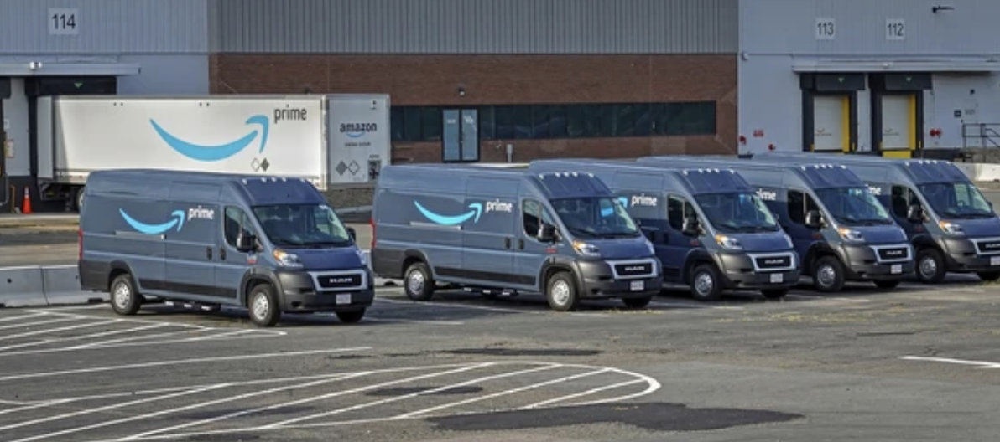 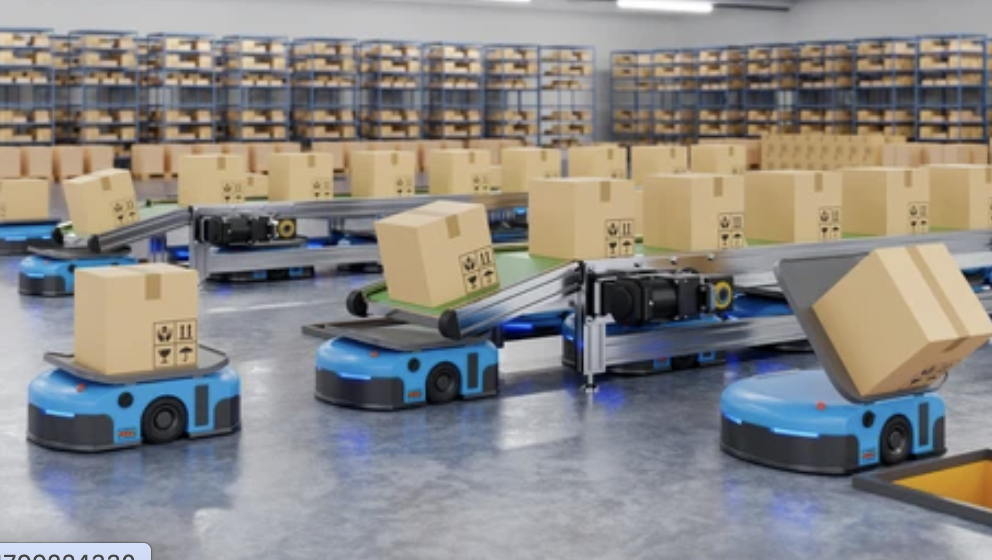Billions of people are familiar with the Amazon brand, while millions are its customers. More than 89% of US buyers agree that they would rather buy products from Amazon than other e-commerce sites. As Forbes once stated, “Amazon has earned our trust by delivering the products we want, on time, intact, in the same branded brown boxes—consistently.” As the popularity of Amazon grows at a rapid rate, many predict that soon it will steal the show from tech giants Microsoft, Tesla, and Alphabet. The latest statistics presented below highlight Amazon’s potential to become the number one company in the world: Amazon is worth over $1.105 trillion as of 2022. Having a brand value of $350 billion, Amazon is second only to Apple, leaving Google and Microsoft behind. In 2022, Amazon has 300 million active users. Among these active users, 197 million people visit Amazon.com every month. Amazon ships to more than 100 countries, excluding Cuba, Iran, North Korea, Sudan, and Syria. Over 200 million people globally have an Amazon Prime subscription. There are over 157.4 million Amazon Prime subscribers in the United States. Amazon Prime is available in 22 countries. Amazon Prime video, the second-largest streaming service in the world, has over 205 million subscribers. Around 25.21 billion US dollars is generated yearly from membership services. In 2021, Amazon Prime Day sales amounted to $11.19 billion. On average, Prime subscribers spend $1,400 per year. Amazon.com receives 2.2 billion visits per month. Amazon owns more than 90% market share in five product categories: Batteries (97%), Kitchen & Dining (94%), Home Improvement Tools (93%), Golf (92%), and Skin Care (91%). Amazon boasts nearly 50% share of the US e-commerce market, which is more than triple the combined shares of its main competitors: eBay (6.6%), Apple (3.9%), and Walmart (3.7%). In 2021, almost 2 million SMBs operated as Amazon’s third-party sellers. Half of Amazon’s American partners use the FBA service, as it offers at least 30% lower shipping costs. Every quarter of 2021, about 56% of Amazon’s revenue came from third-party sellers. Amazon sellers earn between $26,000 and $810,000 annually. On average, small and medium-sized businesses in the US sell more than 4,000 items per minute. Amazon has 1.2 million employees in 2022. Amazon employment statistics show that the number of employees this year almost doubled from the number registered in the fourth quarter of 2019 when it was 789,000. Amazon hired 270,000 new employees in the second half of 2021 to help provide its one-day and same-day delivery services. In 2021, Amazon’s advertising revenue was about $31 billion. Amazon’s market cap peaked to $1.88T in July 2021.
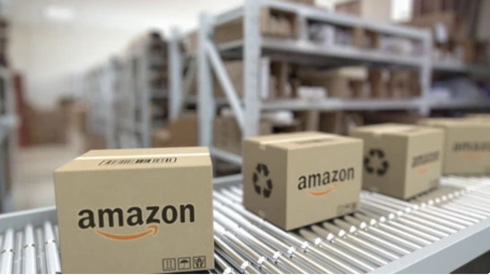 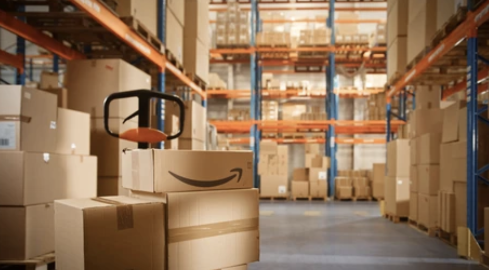 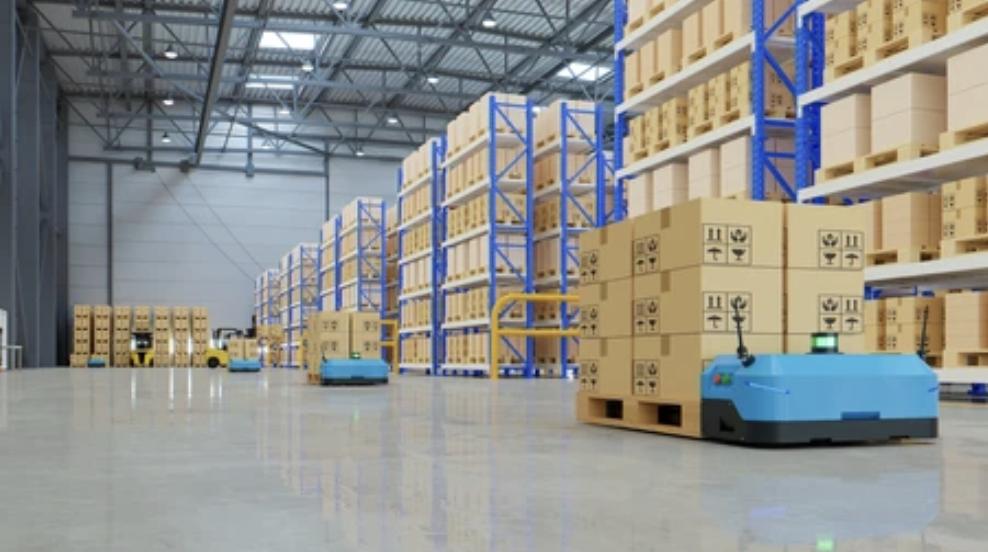 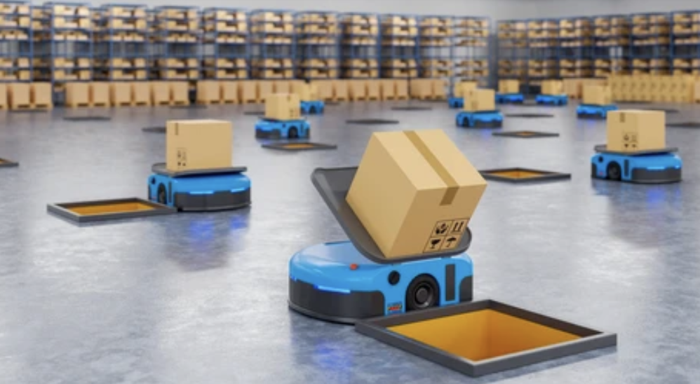
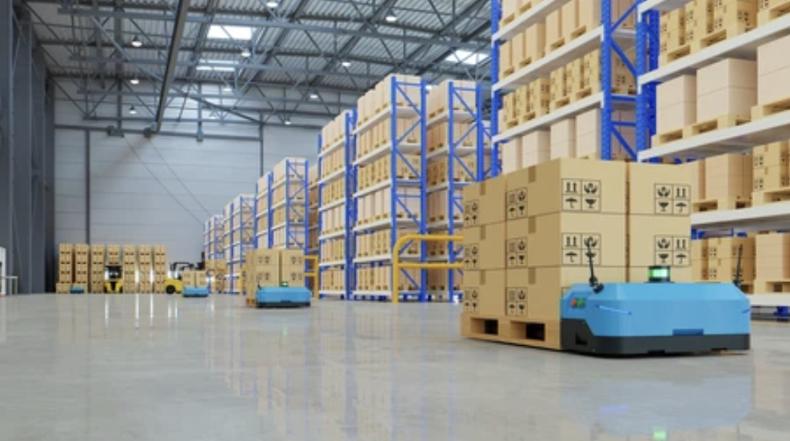 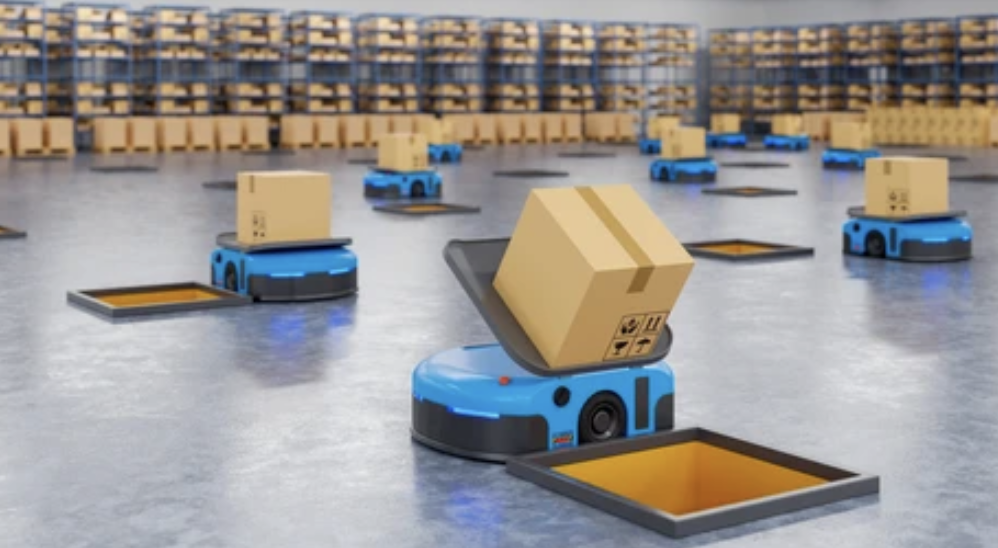
Amazon reported its 2023 fourth-quarter earnings on Thursday, February 1, with EPS of $1.00, $0.20 better than the analyst estimate of $0.80. Revenue for the quarter came in at $170B versus the consensus estimate of $165.95B. “Amazon blew past both revenue and earnings per share expectations this quarter, thanks to a strong performance in its key AWS cloud business as well as several cost-saving measures implemented during recent months,” said Jesse Cohen, senior analyst at Investing.com. “Amazon delivered a strong quarter, reflecting ongoing strength in its cloud computing and advertising businesses. Demand for AWS cloud services held up better than expected despite macroeconomic headwinds, posting double-digit growth. “The bottom line is that despite all the concerns plaguing the tech sector, Amazon has managed to perform surprisingly well,” he continued. “The results indicate that ongoing cost-cutting measures are having a positive impact on Amazon’s business prospects. Amazon’s strong guidance is another indicator that the company may be starting to come out of the woods.”
Amazon’s increasing popularity among consumers worldwide guarantees that it will continue earning profits. Amazon forecasts its annual revenue growth rate this year will be 12.73% and expects its revenue to reach $485,902,000,000 in 2022. These figures are achievable partly because Amazon strongly emphasizes scientific innovations, investing generous amounts of money in scientific research. In 2019, Amazon put a whopping $35.93 billion into technology and content, 12.8% of its net sales. Amazon’s research mainly focuses on advanced technologies such as AI, machine learning, cloud computing, cashless Go stores, robotic warehouses, drone deliveries, and cyber security. There is little doubt that, given this dedicated investment in technology, Amazon’s services will continue improving, and its popularity will increase together with its profits. The table below shows the inexorable upward trajectory of Amazon’s annual revenue since 2009:
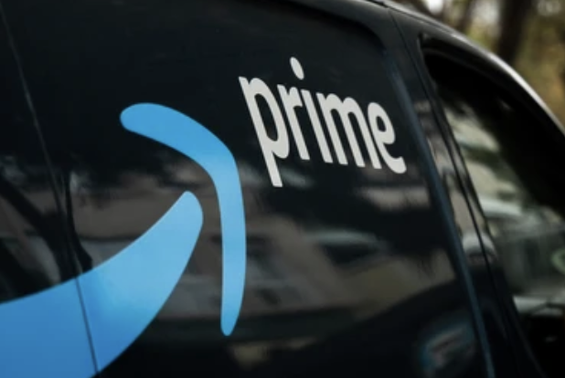 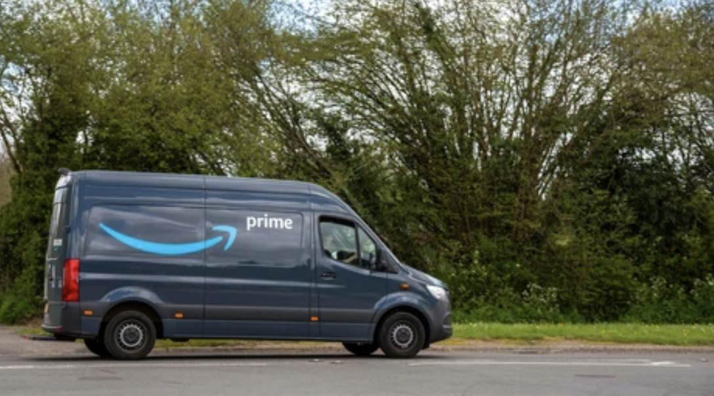 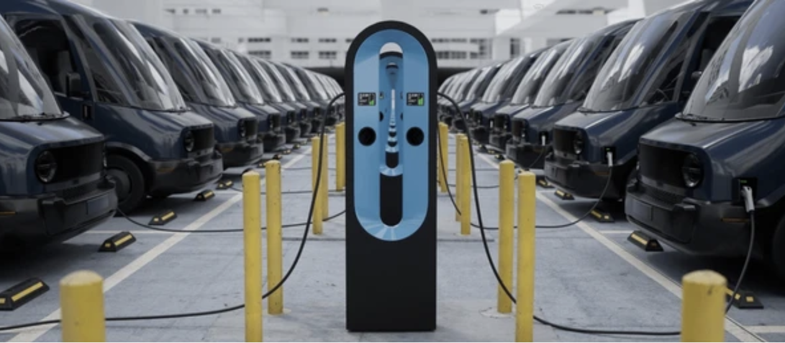 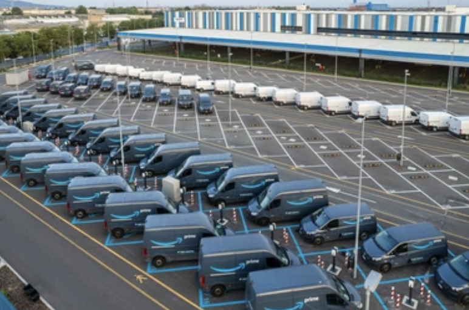